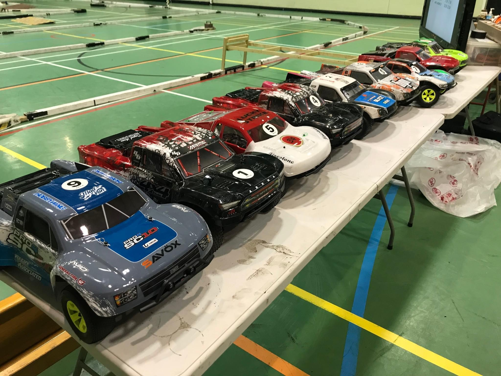

Short Course Truck Class
Short Course Trucks (SCT) provide exciting, side-by-side racing that’s fun for all levels of experience. With their wide stance and big bumpers, SCTs are durable, forgiving, and great for close competition.
Car Example
Here’s a lineup of typical SCTs used at SMCC — bold bodies, wide wheelbase, and always ready to race.
Rules
| Chassis | Any 2WD or 4WD 1/10 short course truck with any hop-ups is allowed. |
| ESC | No restrictions. |
| Servo | No restrictions. |
| Motor | Limited to 10.5T brushless. If using a lower turn motor, notify race control and reduce speed to a comparable level. No championship points awarded otherwise. |
| Gearing | No restrictions. |
| Tyres |
Control tyre: Schumacher Mini Spikes or Mini Pins (Yellow Compound only). Mini Spikes / Mini Pins: Front: U6766 / U6767 Rear: U6766 / U6767 Foam Inserts (Hard): U6772 NO tyre additive allowed under any circumstances. |
| Bodyshell | Any 1/10 SCT shell is permitted. |
| Batteries | Only 2S 7.4V Li-Po or 6-cell 7.2V NiMH. No capacity limits. Li-HV must charge to 7.4V max (BRCA rules). Random checks may occur. |
Tips for New Racers
- Use the approved tyres to ensure maximum grip and rule compliance.
- Start with a 10.5T motor for reliable performance and longevity.
- Short Course Trucks are tough — great for learning racecraft and control.
- Ask regular drivers or race control if you’re unsure about setup or eligibility.
Track Action
Expect rubbing, bumping, and spectacular slides — SCT racing at SMCC is always entertaining!